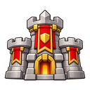
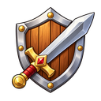
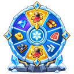
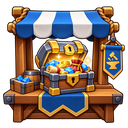
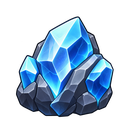
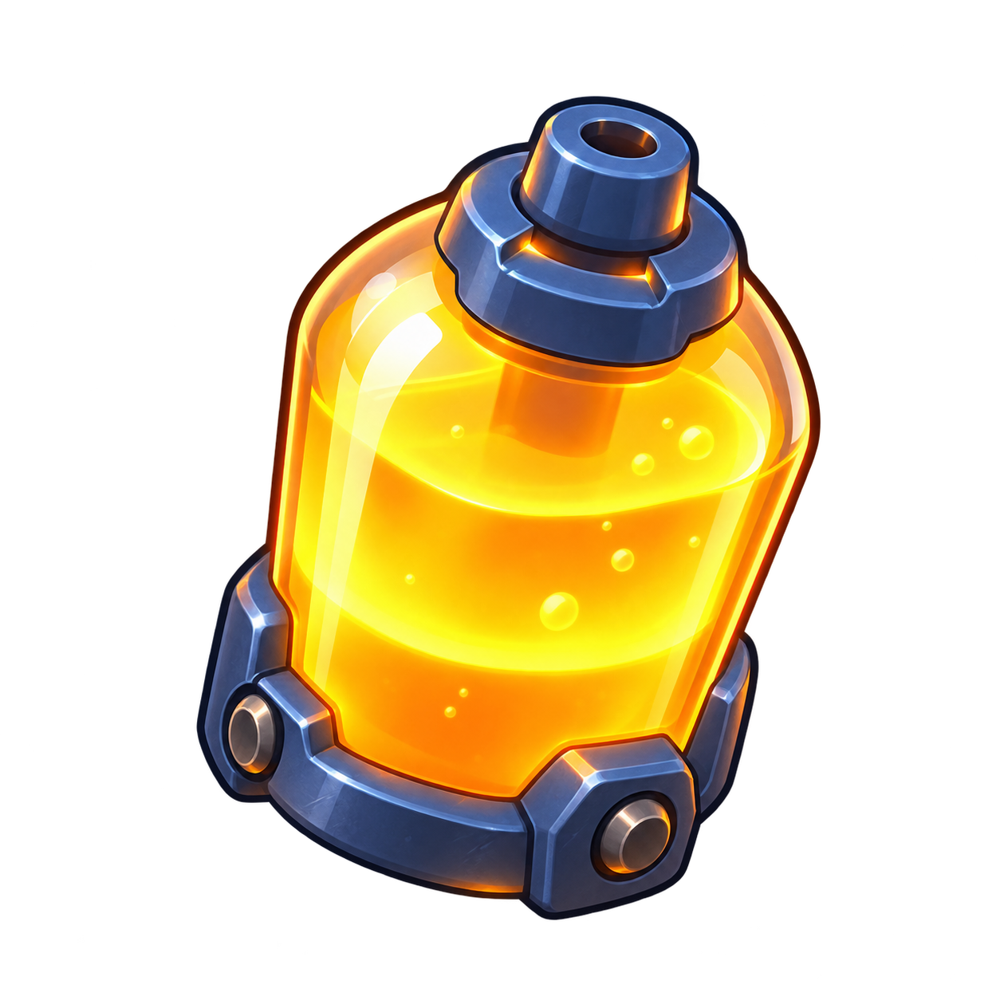
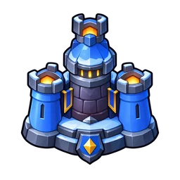

Нужный гайд.
В нужный момент.
Тактика, развитие и расчёты — под рукой.
Посчитать перед улучшением
2 инструментаГайды по игре
Бой и герои7 материалов

PvP за объекты
PvP за объекты в Whiteout Survival: Джесси и Джассер в атаке, Сергей, Патрик и Бахити в защите, формации 50/20/30 и 60/40/0, СвС, замена в свой гарнизон, пополнение и синхронные удары.
Правила войны
Правила войны в Whiteout Survival: базовые отряды DMG и DEF, фейковый марш FKE, вывод войск из-под удара и выбор боя против более сильного противника.

Боевая система
Боевая система Whiteout Survival: состав марша, типы войск, 12 боевых статов, ралли и гарнизон, чтение боевого отчёта и диагностика поражения.
Герои
Герои Whiteout Survival: поколения, источники, звёзды, навыки и разумная прокачка без слива фрагментов.
Снаряжение героев
Снаряжение героев Whiteout Survival: здоровье и смертоносность по слотам, приоритет пехоты и стрелков, лестница усиления, Камни Эссенции и эксклюзивные виджеты.
Герои по поколениям
Герои Whiteout Survival по поколениям: приоритеты вложений для F2P и малого/среднего доната, источники героев и рабочая звёздность.
Арена и освоение
Арена и Освоение в Whiteout Survival: расстановка героев, логика целей, навыки и характеристики Освоения, экипировка, попытки, награды и магазин Арены.
Развитие5 материалов
Эксперты
Эксперты в Белой Мгле: как открыть, развивать сближение и навыки, как работают походы и почему обычному игроку выгоднее сначала экономические эксперты.
Эксперты по поколениям
Эксперты Белой Мглы по поколениям: сроки появления, роли, навыки и приоритеты развития для обычного игрока.

Колесо Фортуны
Колесо Фортуны в Whiteout Survival: сколько гемов нужно на 120 круток, сколько фрагментов ждать, почему важны книги навыков и какого героя выбирать.
Развитие аккаунта
Развитие аккаунта в Whiteout Survival: что копить между СвС, что тратить на стадии подготовки, как балансировать системы и куда направлять дефицитные ресурсы.

Магазины и валюты
Магазины и валюты в Whiteout Survival: что регулярно брать в Магазине Альянса и как выбирать дефицитные ресурсы для развития аккаунта.
События10 материалов
Мобилизация альянса
Мобилизация альянса — 6000+ очков без слива запасов: личные задания 200%/120%, три попытки за 150 гемов, билеты и работа R4/R5.
Охота на медведя
Охота на медведя — пять волн рейдов: короткая инструкция игроку и схема организации для офицера.
Битва за литейную
Битва за Литейную — PvP за объекты, очки, AFK-фарм, мастерские, наёмники, телепорты и командная логика.
Битва в каньоне
Практический гайд по Битве в каньоне в Whiteout Survival: три отряда, топливо, очередь боёв, Форты, Ледяная цитадель и отдельная инструкция для R4/R5.
Безумная Джо
Безумная Джо в Whiteout Survival: обмен войсками, две рабочие схемы, важные волны, герои стены и подкрепления.

Рудник ледяного огня
Рудник Ледяного Огня в Whiteout Survival: навыки, патрули, россыпи орихалка, Прорывы жил, телепорты и две рабочие стратегии.

Снегоуборщики
Снегоуборщики — F2P-стратегия: Суперочиститель до 13-го, минимум 4 ракеты на 14+, печь, Пальто и бесплатное прохождение до 19-го этапа.

Зимняя осада
Зимняя осада: два отряда, гарнизоны, Надзиратели, мораль, звёзды, подготовка R4/R5 и тактика атаки.
Пингвинья вечеринка
Пингвинья вечеринка: Парк пингвинов, Ледяной взрыв, Профи вечеринок, Потерянная добыча, средние монеты, лопаты и магазин.
Бродячий театр
БРОДЯЧИЙ ТЕАТР — мобильный справочник Whiteout Survival
Ваши материалы
Сохраняйте гайды кнопкой «В избранное» в статье. Они появятся здесь.